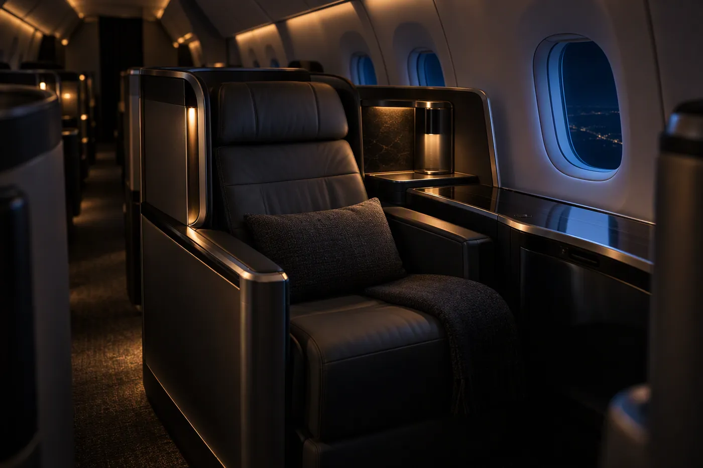

01
国际名单转化
拖入国际航班旅客名单 Excel，自动按海关上传模板清洗——转换国籍/性别/证件代码、判定出入境与往来机场，一键导出可直接上传的文件。
进入›
02

升舱金额计算器
导入 C2 升舱金额统计表，按 6 个岗位的固定比例自动分配金额，生成「人员 × 日期」交叉汇总表，便于绩效分摊。
进入›
03
出港排班表
导入当日出港航班 Excel，自动按计离分段并排序，生成可编辑排班表——分配登机口、指定负责人、记录备注与特服，导出 Excel / 图片。
进入›
04
航班日报生成器
在左侧逐项填写当日生产情况与正常性数据，右侧实时预览航班生产日报，一键导出与官方版式一致的 Word 文档。
进入›
05
KN航班出港统计
导入 FIOS 导出的出港 Excel，自动筛选 KN 航班、计算截载时间与订座人数、汇总早始发人数，导出图片供值机保障使用。
进入›
06
东上联日数据汇总
整合「航班数据统计」与「航班运量汇总」：导入 FIOS 航班表与指挥长周报 PDF、录入运量，一键生成东上联表与总表两块数据，逐行复制到共享文档或导出整合 Excel。
进入›
07
每日待办
按日期记录每天要做的事，一个一个勾掉自动保存；可复制昨日、看历史日历、跨日期搜索，固定事项可勾选加入当日。
进入›
08
早始发正常率测算
录入当月早始发班数（只需填总班数与延误班数），与机场正常率逐档比对，算出 T1 / T2 / T3 各还要追回多少班正常，并判断剩余航班追不追得上。
进入›